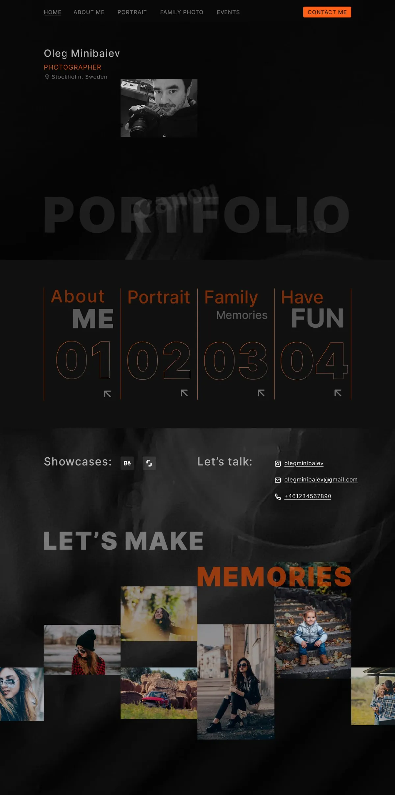
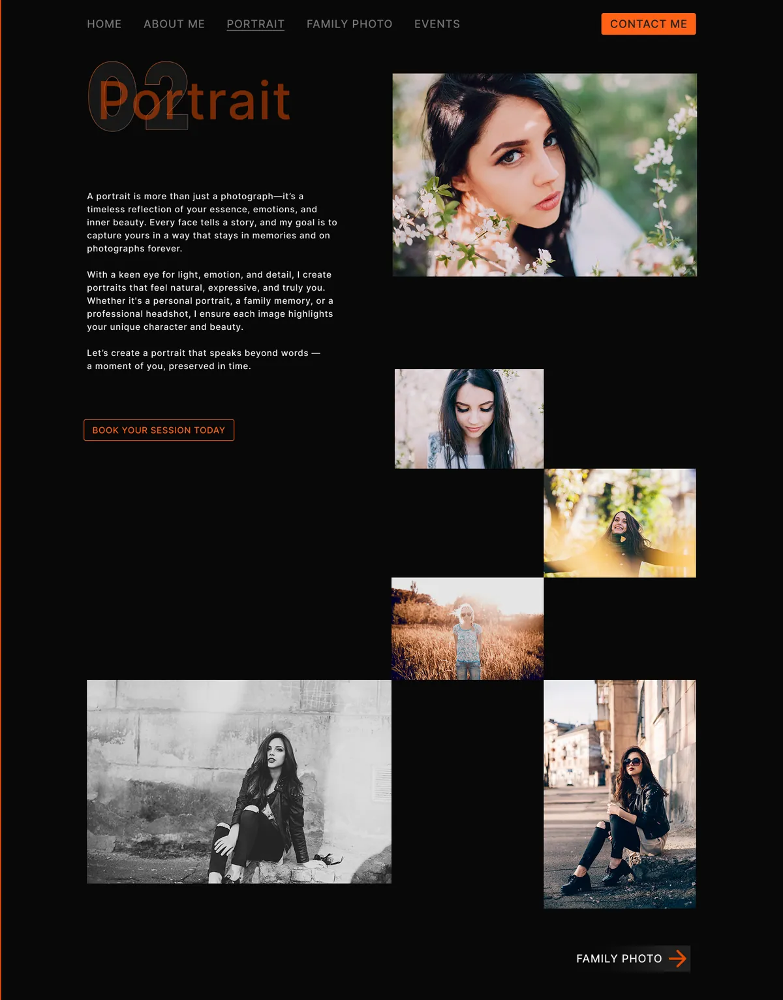
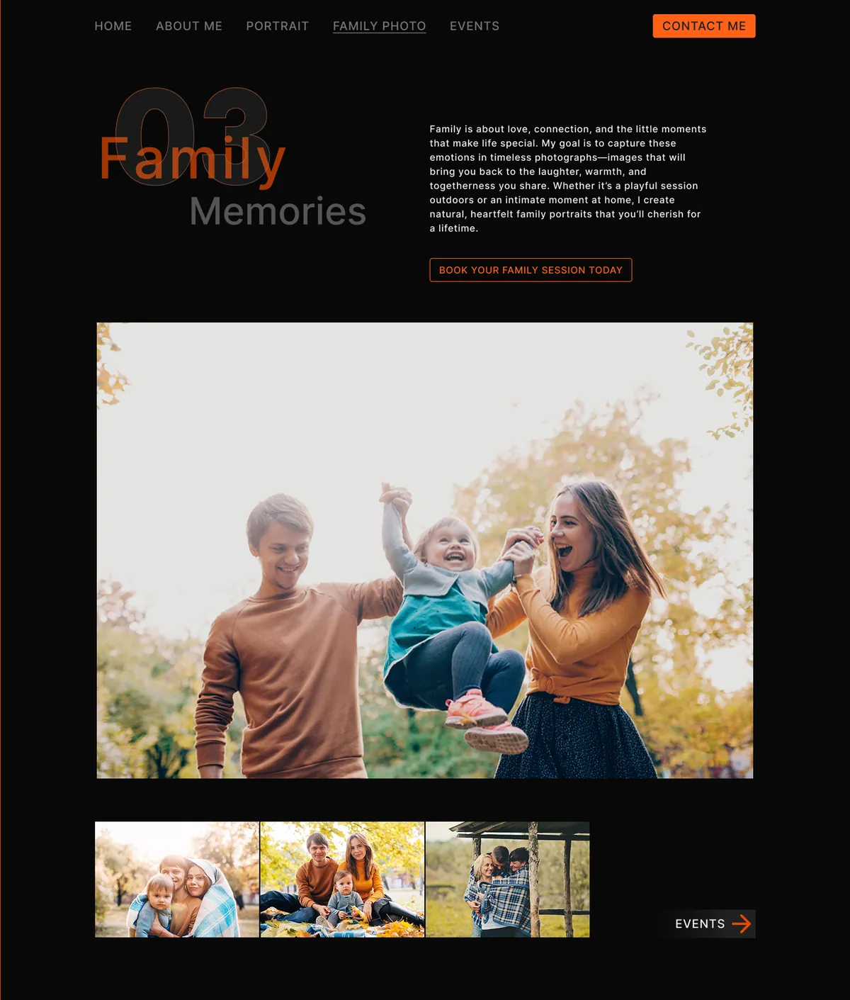
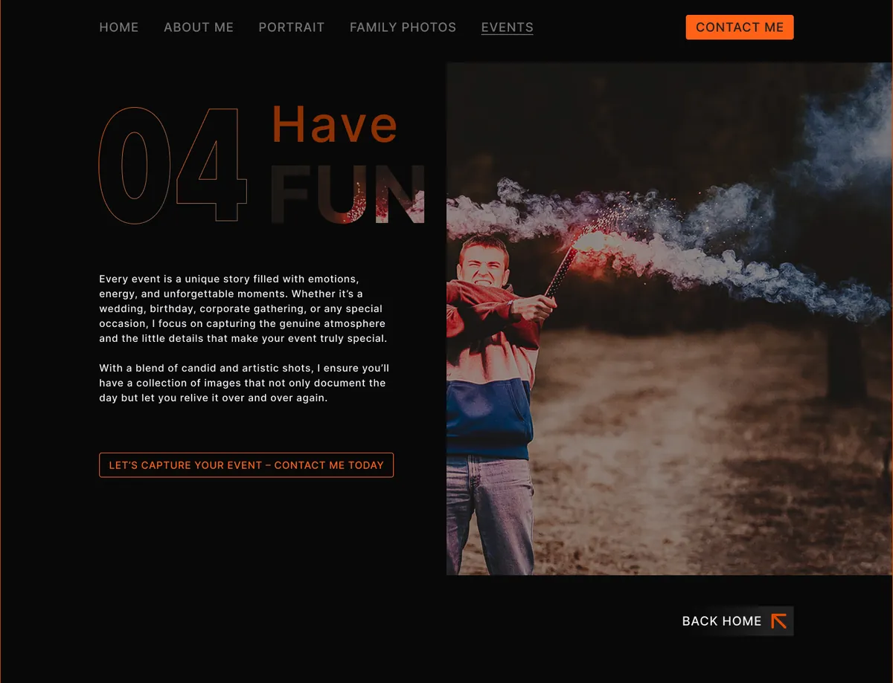
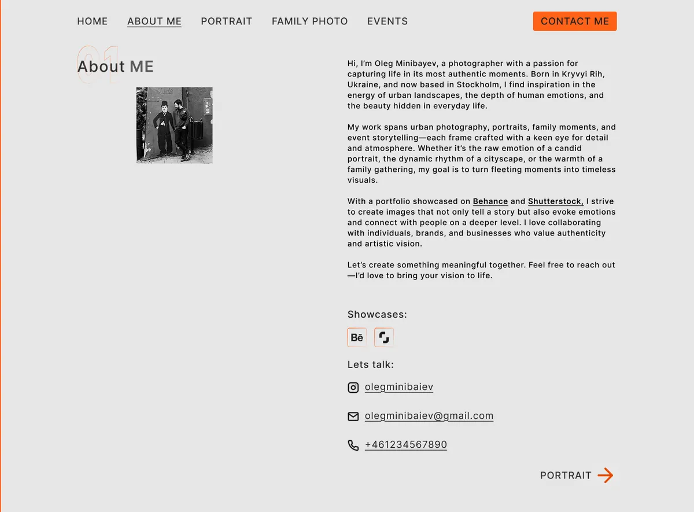

Dark canvas, one accent
Near-black backgrounds act as a gallery wall. A single orange accent marks everything interactive, so attention goes either to a photograph or to the next action.
Side project · Website design
A portfolio that lets the photographs lead.
A desktop website for Oleg Minibaiev, a Stockholm-based photographer working across portraits, family sessions, and events. The interface stays quiet on a dark canvas, the work is grouped into four numbered categories, and every page ends with a way to book a session.
PROTOTYPE WALKTHROUGH
KEY DECISIONS
Near-black backgrounds act as a gallery wall. A single orange accent marks everything interactive, so attention goes either to a photograph or to the next action.
Services read as an editorial index: About 01, Portrait 02, Family 03, Have Fun 04. Outlined numerals repeat on each page for wayfinding.
The index cards stay calm at rest and expand into a photo preview on hover, so visitors can sample a category before committing to a click.
Each category closes with a contextual call to action and a link to the next category, so the site reads as a sequence rather than a dead end.
Home
The home page introduces the photographer, then hands over to the 01–04 index. Showcase links to Behance and Shutterstock sit beside direct contact details.
A “Let’s make memories” mosaic closes the page with offset, mixed-size tiles, laid out more like a photo book than an automatic grid.

Category pages
Each category shares the same structure: an oversized numbered heading, a short introduction, a booking button, and a gallery. Layout and headline treatment shift with the content, from the offset portrait mosaic to the full-bleed events hero. About Me switches to a light background for contrast.




COMPONENT SET
Components
A small library of components with variant properties powers the hover and navigation interactions, so the prototype runs on component states rather than duplicated frames.

NEXT PROJECT